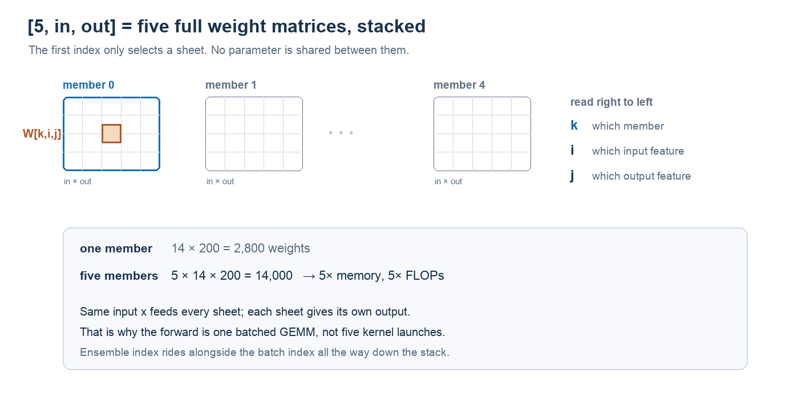
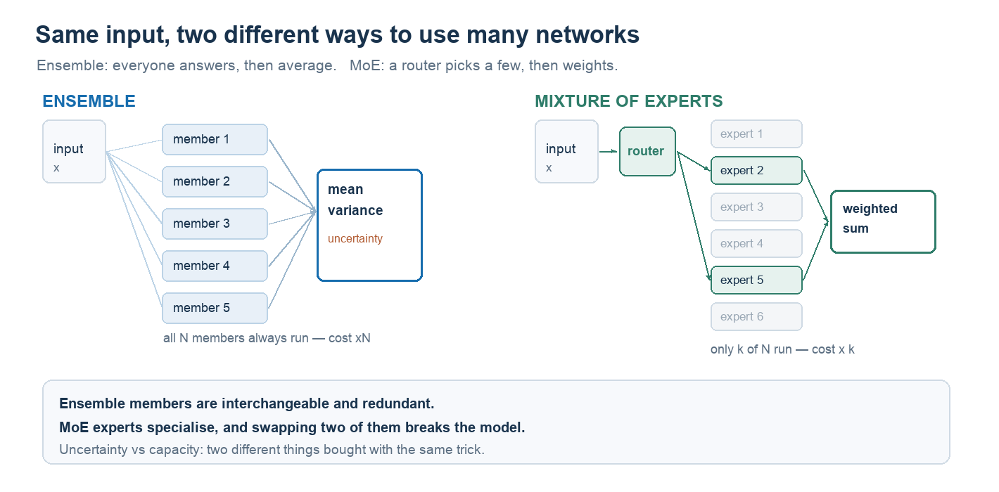

NOTE 19 / 模型结构 · 不确定性与容量
集成与 MoE
同样是把多个子网络并用，集成为的是知道「我没把握」，MoE 为的是用同样的电费装更多知识。
起因是读 PETS 的动力学模型：layer5(layer4(...layer1(x))) 看起来只是一条五层流水线，但构造函数里那个 ensemble_size=5 让它变成了五条并行的流水线。这篇把它拆开讲清楚，再和 MoE 做个对照——两者经常被混为一谈，其实买的是完全不同的东西。
范围。以 PETS 这一系的概率集成世界模型为主线。不涉及贝叶斯神经网络的变分推断细节，也不展开 MoE 的分布式实现。
1. 先看它到底存了什么
关键不在层数，在权重张量的形状。一个普通的全连接层存的是：
weight: [in_features, out_features]而 FCLayer(..., ensemble_size=5) 存的是：
weight: [5, in_features, out_features]
bias: [5, 1, out_features]不是五个 nn.Linear，是一个三维张量。所以「经过 layer1 到 layer5」这句话在视觉上成立，在物理上不成立——每一层内部都是五个互不共享参数的子网络，一层一层往下走的是五份并行的数据流。

换个说法：[in, out] 是一张表，行是输入特征、列是输出特征，格子里的数就是「第 i 个输入接到第 j 个输出」的权重。[5, in, out] 就是五张这样的表摞在一起，索引写成 W[k][i][j]——先翻到第 k 张，再取第 i 行第 j 列。
五张表之间没有任何共享。所以显存是五倍、浮点运算也是五倍，换来的就是「五次独立的预测」。
2. 一次前向里真正发生了什么
先回答一个容易被跳过的问题：复制发生在哪？不在层里，在模型 forward 的第一行，只此一次。
def forward(self, x): # x: [B, in]
x = x.unsqueeze(0).repeat(self.ensemble_size, 1, 1) # -> [E, B, in]
x = F.relu(self.layer1(x))
x = F.relu(self.layer2(x))
...
return self.layer5(x)第 2 到第 5 层不做任何复制，它们只是接收并保持这个多出来的第一维。所以往下看时，可以把它想成五条平行的线在深度方向上一起前进。
每一层内部只有一行：
def forward(self, x): # x: [E, B, in]
return torch.baddbmm(self.bias, x, self.weight)
# bias[E,1,out] + x[E,B,in] @ weight[E,in,out] -> [E,B,out]baddbmm 的第一维是逐元素对应的：第 k 份输入只和第 k 个权重矩阵相乘，不交叉、不混合。
把输入扩成 [E,B,in] 之后，和权重做一次批量矩阵乘：
[5, B, in] @ [5, in, out] -> [5, B, out]这是一次 batched GEMM（cuBLAS 里叫 strided batched gemm）。五个网络的计算被塞进同一个 kernel，而不是发五次 kernel、排五次队。
这也回答了「为什么不用 nn.Sequential 或五个独立 Module」：独立 Module 会让 kernel launch 变成五次，也吃不到一次大矩阵乘的吞吐。把并行交给 BLAS，而不是交给 Python 循环——这是 PETS 工程实现里最实用的一招。
代价是显存：参数和激活都是五份。
3. 输出的两半：两种不确定性
PETS 的成员输出的不是标量，是高斯分布的参数：
out: [5, B, 2*(obs_dim+1)]
├─ 前一半：mean
└─ 后一半：logvar加 +1 是因为奖励也算一维。所以一次前向给了你两个不同的东西：
| 对比项 | 来自哪 | 含义 | 学名 |
|---|---|---|---|
| 预测噪声 | 每个成员自己的 logvar | 这段数据本身有多吵 | 偶然不确定性（aleatoric） |
| 成员分歧 | 五个 mean 之间的方差 | 这块区域我们没见过 | 认知不确定性（epistemic） |
这两者经常被混着说。真正用来判断「没见过、别往这走」的是第二个——成员之间的分歧，而不是成员内部预测的方差。
训练用的是负高斯对数似然：(mean − target)² / var + log(var)。前一项让均值拟合，后一项让网络学会「该有多不确定」。只用 MSE 的话，var 是学不出来的。
下面的实验能直接看到分歧从哪来：每个成员用自助采样拟合一个三次多项式，在数据覆盖的区间内它们几乎重合，出了区间就按各自的外推斜率散开。
分歧从哪来
虚线是真实函数，蓝点是带噪声的训练样本，浅蓝底是数据覆盖范围。细线是每个成员自己的拟合，粗线是均值，橙色带是成员间的 ±2σ。
- 区间内的平均分歧
- —
- 区间外的平均分歧
- —
- 两者之比
- —
—
把「数据右边界」往左拉，会看到发散的位置跟着左移；把成员数调到 1，橙色带消失——单个成员无法提供成员之间的分歧。但单个概率模型仍可通过自己的预测方差表达偶然不确定性，贝叶斯模型也可用其他方式估计认知不确定性。
注意噪声滑杆：噪声调大，样本更散，成员之间的差异也会变大。这说明分歧既反映「没见过」，也受「数据有多吵」影响，两者在实践中不是完全可分的。
4. 为什么不用贝叶斯网络
理论上，贝叶斯神经网络（BNN）对不确定性的刻画更「正确」。工程上它有三个问题：难训、超参敏感、推理要多次采样。
2017 年那篇《Simple and Scalable Predictive Uncertainty Estimation using Deep Ensembles》给了一个很实用的结论：几个不同初始化的网络平均起来，在多数任务上不输甚至优于 BNN，而实现成本几乎为零。
所以 PETS 选它，是工程判断而不是理论最优。业内的说法是「穷人的贝叶斯」。
这里要修正一个常见说法：有人讲「PETS 里每个网络只看一部分数据」。更准确的是——PETS 的多样性主要来自各自的随机初始化，不做 bootstrap；后续一些工作（比如 MOPO）才会再叠加数据子集抽样。两者的效果类似，但不要把 bootstrap 说成 PETS 的默认设定。
一个推论值得记住：如果五个成员共享完全相同的数据和初始化，它们会收敛到同一个解，集成退化成单模型。多样性是这套方法的命根子。
5. 与 MoE 的分野
两者在结构上确实像：都是多个子网络、都靠并行算。但用法完全相反。

| 对比项 | Ensemble | MoE |
|---|---|---|
| 参与方式 | 全员无条件参与 | 路由器选 top-k，其余休眠 |
| 聚合方式 | 求均值 / 采样 | 按门控权重加权求和 |
| 参数与算力 | 参数 ×N，算力 ×N | 参数 ×N，算力只 ×k |
| 要解决的问题 | 知道自己不知道 | 用固定算力换更大容量 |
下面的实验把「路由」这件事画出来：拖动黑点，看门控权重怎么分布、哪几个专家被激活。
路由选择了谁
八个专家分布在二维特征空间里，门控按到查询点的距离做 softmax。拖动黑点改变输入，观察激活集合怎么变。
- 激活专家
- —
- 算力占用
- —
—
把温度调到最低，这个教学示例的路由更接近硬选择；调高则选中专家的权重更平均。但只要仍只计算 top-k 专家，它就还是稀疏 MoE，不会仅因权重变平而退化成全员参与的 Ensemble。实际模型是否可调温度、如何保持负载均衡，要看具体路由实现。
6. 更本质的区别：冗余还是特化
典型用法的差别是：Ensemble 用多个完整模型获得预测多样性，MoE 用路由让不同专家承担不同输入。但专家是否形成可解释的语义分工，需要测量，不能预先保证。
Ensemble 成员编号通常可以交换，因为最后还要做对称的聚合。MoE 的专家参数与路由器对应；若同时置换专家及路由权重，数学输出可以不变，但若只换专家、不改路由，结果通常会改变。
这也解释了双方最难的地方：Ensemble 怕成员太像（分歧不足，测不出盲区），MoE 怕路由塌缩（过多输入挤到少数专家，其余专家缺少训练）。
7. 各自的坑
Ensemble 最危险的失效模式是「集体盲区」。如果多个网络在同一个错误先验上收敛，它们可能一致地错且分歧很小。成员分歧不是可靠的安全保证。
所以实践中常见两种补救：一是让成员看到不同的数据子集（bootstrap），二是把集成的不确定性与独立的安全层（比如物理约束、碰撞检查）配合使用，而不是只依赖分歧。
MoE 的坑在训练侧。top-k 路由可能让热门专家过载、冷门专家缺少梯度；分布式训练还要做 all-to-all 的 token 交换，通信开销可能吃掉稀疏化省下的算力。
8. 怎么组合
「底层 MoE 大脑 + 上层 Ensemble 世界模型」可以成立，也可以让每个 Ensemble 成员内部使用 MoE。后者增加了容量和集成多样性，同时也增加训练成本与归因难度；是否值得需要实验，而不是先判定「意义不大」。
一种可试的分工是：VLA 用 MoE 扩容量，独立世界模型用 Ensemble 提供分歧信号，再由物理约束与安全层兜底。MoE 的稀疏计算本身不等于动作多样性，Ensemble 也不等于安全。
还有第三种容易混淆的：混合密度网络（MDN）。它在一个网络内输出混合分布，可表达多峰和偶然不确定性。它不是独立模型的 Ensemble，不能用「组件分歧」替代认知不确定性，但其混合方差本身仍是合法的不确定性建模结果。
9. 收尾
一句话区分：
Ensemble 买的是「知道自己不知道」，MoE 买的是「用同样的电费装更多知识」。
前者是统计上的保险，后者是容量上的杠杆。混着叫「多专家」会掩盖这个区别——也是为什么很多论文里两者同时出现，却各管一段。
相关笔记：CEM 与 Diffusion（集成给出的分歧怎么被规划器用掉） · LingBot-VLA 2.0 原理（MoE 在动作专家里的用法） · 把大模型放在闭环外面（世界模型与闭环的分工）
外部参考：PETS: Deep RL in a Handful of Trials（Chua et al. 2018） · Simple and Scalable Predictive Uncertainty Estimation using Deep Ensembles（Lakshminarayanan et al. 2017）